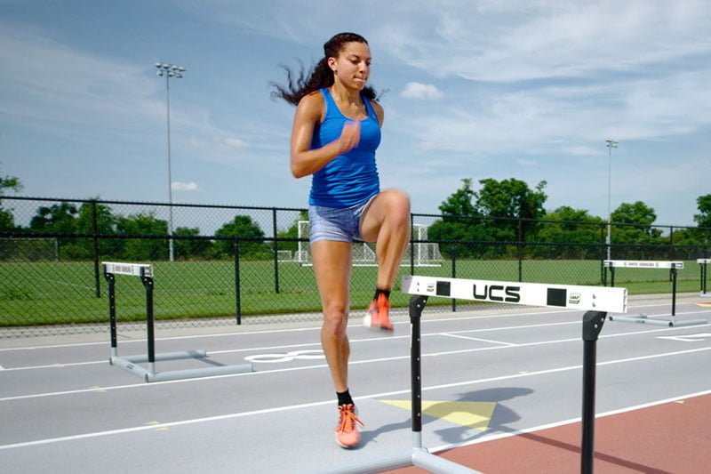
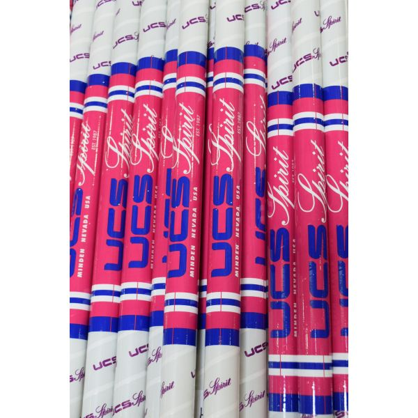
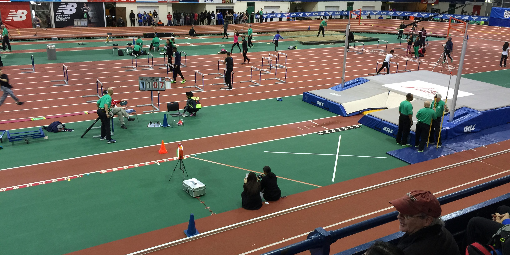
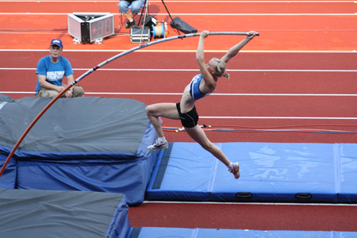
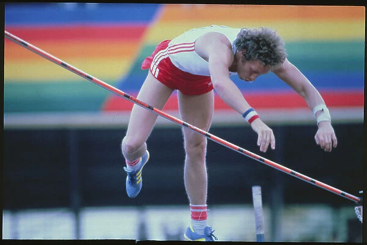

Step-by-Step Guide
Here are the detailed steps to mastering pole vaulting, from warm-up to landing safely in the pit.
Step 1: Warm-Up and Stretch
Start with a full-body warm-up. Focus on dynamic stretches to prepare your legs, core, and shoulders for pole vaulting.
Step 2: Choose Your Pole
Select the right pole based on your height and weight. Beginners may want to start with a stiffer pole for better control.
Step 3: Grip the Pole
Place your bottom hand around hip height and your top hand at shoulder height.
Step 4: The Approach
Sprint down the runway with increasing speed, maintaining good posture. Focus on building momentum.
Step 5: Plant the Pole
Plant the pole firmly in the takeoff box, keeping your arms extended upward.
Step 6: Takeoff
Explosively push off the ground with your plant leg while driving your knees upward.
Step 7: Rock Back
Swing your trail leg upward and tuck into the rock-back position, keeping your eyes on the crossbar.
Step 8: Push-Off
As the pole straightens, extend your arms and push off to clear the crossbar.
Step 9: Clear the Crossbar
Arch your body over the crossbar, aiming to twist and avoid knocking it down.
Step 10: Landing
Land safely in the middle of the pit, tucking your chin and rolling to minimize impact.